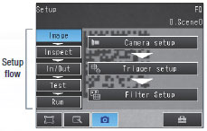

You can apply up to three of the four unique filters developed by OMRON in the desired order to remove printing irregularities and noise, in order to achieve a stable reading.
Building Automation
Industrial Automation
Power Automation & Safety


Bangladesh Distributor
FQ-CR Series
Code Reader

Exceptional Reading Performance with Easy Operation
about this Product Family
Related Contents
- Code Readers / OCR
- Features
- Lineup
- Specifications
- Dimensions
- Catalog
last update: June 01, 2015
[FQ-CR2]
OMRON's Unique Algorithm Provides Superior Reading Ability for Direct Part Marking codes
Removal of Printing Irregularities or Noise
Filter function
Types of Filtering
Smooth
Smooths the image.
Erosion
For white codes, reduces the cell size.
Effective for reading separated dot codes.
Dilate
For white codes, increases the cell size.
Effective for reading codes with cell spreading.
Median
Removes noise.
Combining Filtering
Erosion and dilation can be combined to connect dots without changing the dot thickness.
Automatic Parameter Adjustment Until Reading is Successful
Retry function
Code Readers must be able to read codes even for poor printing conditions. You can automatically retry reading while changing the exposure time and other reading conditions, even for changing workpieces or environments, to enable a stable reading.
The following retry functions are provided.
1. Retrying the Specified Number of Times with the Same Conditions
Reading is performed the specified number of times for the same scene.
2. Retrying While External Trigger Is Input
Reading is performed until successful, as long as an external level trigger is input.
3. Retrying While Changing the Shutter Speed
Reading is performed for the same scene while changing the exposure time in stages.
4. Retrying While Changing the Reading Conditions
When reading DPM codes, inconsistencies in printing conditions can result in NGs if reading is performed with only one set of reading settings.
The FQ-CR allows you to register up to 32 sets of reading conditions as scenes and retry reading while changing the scenes in order.
The system automatically determines the scenes with the highest usage rates and changes the order to start with them to flexibly handle changes in reading conditions.
Of course you can specify a fixed order if required.
Easy Confirmation of Code Quality
Code Error Correction Position Display
Red circles are displayed on cells for which the code was corrected on the display.
This clearly shows where the code quality was poor.
[FQ-CR1] [FQ-CR2]
Stable Reading Functions Packed into a Compact Body
Reads Codes Even with Low Contrast
High-power LEDs
The wider the field of view, the more difficult it is to maintain consistent lighting within the field, causing errors in reading. The built-in LEDs of the FQ-CR Series use a unique OMRON DR optical system for effective light usage to maintain consistent lighting within the field of vision at a brightness that is four times that of previous models.
Cuts Light Interference
HDR Function
The HDR (high dynamic range) function minimizes the influence of changes in lighting conditions and light reflection. This enables stable inspections even for materials that are difficult to light evenly, such as metal parts or glossy films, or in locations subject to external light interference.
Cuts Specular Reflections
Polarizing Filter
A polarizing filter is included to cut specular reflection from glossy surfaces. This enables stable code reading even for metallic or other glossy surfaces.
Communications with Host Devices
Ethernet Connection
The compact body also provides an Ethernet connector so that you can transfer read data and images via Ethernet. Smoothly transfer data to PLCs, computers, or other host devices.
Essentially, Simple Enough for Anyone to Set Up
Setup is as easy as displaying codes on the monitor and registering settings with a simple procedure.
Then, the FQ-CR will automatically tune the settings to achieve the optimum conditions.
Two Set-up Tools
Use the convenient Touch Finder for on-site settings and control panel installations, or use a set-up tool on a computer.
TouchFinder for PC (Free)
After purchasing the Code Reader, you can download the TouchFinder for PC free from the member’s website.
Menu Displays in Nine Languages
The nine language support for menus means that you can easily introduce systems into factory sites in other countries.
In addition, you can easily change the language on a menu.
English
Japanese
Traditional Chinese
Simplified Chinese
Korean
German
French
Italian
Spanish
Operation Navigation

Navigation menus for operating procedures from image adjustment through to testing and starting operation are provided so that even beginners can operate the Code Reader.
Flexible System Configuration
Connect Up To Eight Code Readers
The flexibly arrangeable platform can be used for simple configurations with one Code Reader for complex configurations with multiple Code Readers reading from different directions.
Up to eight Code Readers can be controlled from the Touch Finder set-up console.
Code Quality Management
The FQ-CR2 contains state-of-the-art algorithms that enable the reading of codes even with poor reading quality. However, even if the code quality continues to deteriorate for some reason, auto-correction and retrying are used to enable reading, making it impossible to tell where quality was lost simply from the OK/NG reading information.
Here, you can use the cell recognition rate information. The cell recognition rate changes with code printing quality, position inconsistency, installation conditions, and noise. You can log the cell recognition rate and image together to manage quality trends. The logging of recent results is useful for testing when commissioning a line. Run through some sample products and log the cell recognition rate. You can then display the results in a time-based graph to see how much leeway there is in reading performance.
* For the FQ-CR1, the number of detected characters is logged instead of the cell recognition rate.
Automatic Notification of NGs
If you leave the Touch Finder installed on-site, the recent NG sensor display is very useful. Even if you are monitoring more than one Code Reader with the Touch Finder, the display automatically changes to the Code Reader where an NG occurred so that you can quickly confirm conditions.
last update: June 01, 2015